Lines and boxes¶
Introduction¶
Lines and boxes are only available in v4 and higher versions of Pine Script®. They are useful to draw support and resistance levels, trend lines, price ranges. Multiple small line segments are also useful to draw complex geometric forms.
The flexibility lines and boxes allow in their positioning mechanism makes them particularly well-suited to drawing objects at points in the past that are detected a variable number of bars after the fact.
Lines and boxes are objects, like labels and tables. Like them, they are referred to using an ID, which acts like a pointer. Line IDs are of “line” type, and box IDs are of “box” type. As with other objects, lines and box IDs are “time series” and all the functions used to manage them accept “series” arguments, which makes them very flexible.
Note
On TradingView charts, a complete set of Drawing Tools allows users to create and modify drawings using mouse actions. While they may sometimes look similar to drawing objects created with Pine Script® code, they are unrelated entities. Lines and boxes created using Pine code cannot be modified with mouse actions, and hand-drawn drawings from the chart user interface are not visible from Pine scripts.
Lines can be horizontal or at an angle, while boxes are always rectangular. Both share many common characteristics:
- They can start and end from any point on the chart, including the future.
- The functions used to manage them can be placed in conditional or loop structures, making it easier to control their behavior.
- They can be extended to infinity, left or right of their anchoring coordinates.
- Their attributes can be changed during the script’s execution.
- The x coordinates used to position them can be expressed as a bar index or a time value.
- In the x coordinate, they start and stop on the middle of the bar.
- Different pre-defined styles can be used for line patterns and end points, and box borders.
- A maximum of 500 of each can be drawn on the chart at any given time.
The default is ~50, but you can use the
max_lines_countandmax_boxes_countparameters in your indicator() or strategy() declaration statement to specify up to 500. Lines and boxes, like labels, are managed using a garbage collection mechanism which deletes the oldest ones on the chart, such that only the most recently displayed are visible.
This script draws both lines and boxes:
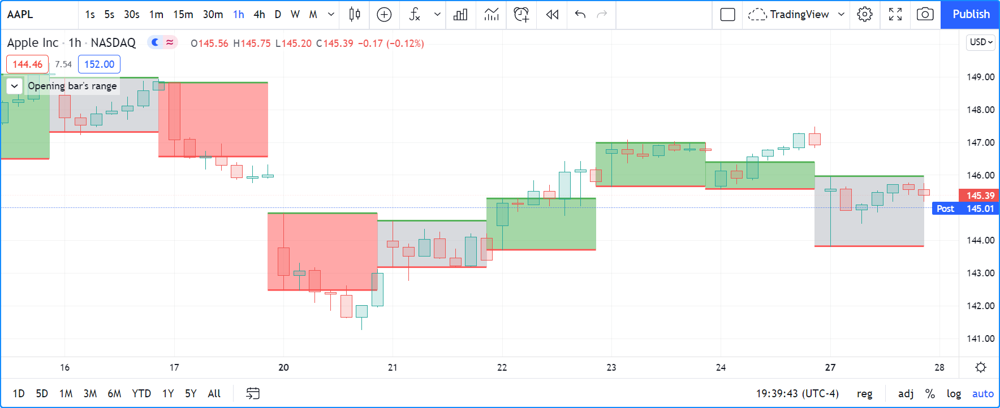//@version=5
indicator("Opening bar's range", "", true)
string tfInput = input.timeframe("D", "Timeframe")
// Initialize variables on bar zero only, so they preserve their values across bars.
var hi = float(na)
var lo = float(na)
var line hiLine = na
var line loLine = na
var box hiLoBox = na
// Detect changes in timeframe.
bool newTF = ta.change(time(tfInput))
if newTF
// New bar in higher timeframe; reset values and create new lines and box.
hi := high
lo := low
hiLine := line.new(bar_index - 1, hi, bar_index, hi, color = color.green, width = 2)
loLine := line.new(bar_index - 1, lo, bar_index, lo, color = color.red, width = 2)
hiLoBox := box.new(bar_index - 1, hi, bar_index, lo, border_color = na, bgcolor = color.silver)
int(na)
else
// On other bars, extend the right coordinate of lines and box.
line.set_x2(hiLine, bar_index)
line.set_x2(loLine, bar_index)
box.set_right(hiLoBox, bar_index)
// Change the color of the boxes' background depending on whether high/low is higher/lower than the box.
boxColor = high > hi ? color.green : low < lo ? color.red : color.silver
box.set_bgcolor(hiLoBox, color.new(boxColor, 50))
int(na)
Note that:
- We are detecting the first bar of a user-defined higher timeframe and saving its high and low values.
- We draw the
hiandlowlevels using one line for each. - We fill the space in between with a box.
- Every time we create two new lines and a box, we save their ID in variables
hiLine,loLineandhiLoBox, which we then use in the calls to the setter functions to prolong these objects as new bars come in during the higher timeframe. - We change the color of the boxes’ background (
boxColor) using the position of the bar’s high and low with relative to the opening bar’s same values. This entails that our script is repainting, as the boxes’ color on past bars will change, depending on the current bar’s values. - We artificially make the return type of both branches of our if
structure
int(na)so the compiler doesn’t complain about them not returning the same type. This occurs because box.new() in the first branch returns a result of type “box”, while box.set_bgcolor() in the second branch returns type “void”. See the Matching local block type requiremement section for more information.
Lines¶
Lines are managed using built-in functions in the line namespace. They include:
- line.new() to create them.
line.set_*()functions to modify the properties of an line.line.get_*()functions to read the properties of an existing line.- line.copy() to clone them.
- line.delete() to delete them.
- The line.all
array which always contains the IDs of all the visible lines on the chart.
The array’s size will depend on the maximum line count for your script and how many of those you have drawn.
aray.size(line.all)will return the array’s size.
Creating lines¶
The line.new() function creates a new line. It has the following signature:
line.new(x1, y1, x2, y2, xloc, extend, color, style, width) → series line
Lines are positioned on the chart according to x (bars) and y (price) coordinates.
Five parameters affect this behavior: x1, y1, x2, y2 and xloc:
x1andx2- They are the x coordinates of the line’s start and end points.
They are either a bar index or a time value, as determined by the argument used for
xloc. When a bar index is used, the value can be offset in the past (maximum of 5000 bars) or in the future (maximum of 500 bars). Past or future offsets can also be calculated when using time values. Thex1andx2values of an existing line can be modified using line.set_x1(), line.set_x2(), line.set_xy1() or line.set_xy2(). xloc- Is either xloc.bar_index (the default)
or xloc.bar_time.
It determines which type of argument must be used with
x1andx2. With xloc.bar_index,x1andx2must be absolute bar indices. With xloc.bar_time,x1andx2must be a UNIX timestamp in milliseconds corresponding to the time value of a bar’s open. Thexlocvalue of an existing line can be modified using line.set_xloc(). y1andy2- They are the y coordinates of the line’s start and end points.
While they are called price levels, they must be of values that make sense in the script’s visual space.
For an RSI indicator, they would typically be between 0 and 100, for example.
When an indicator is running as an overlay, then the price scale will usually be that of the chart’s symbol.
The
y1andy2values of an existing line can be modified using line.set_y1(), line.set_y2(), line.set_xy1() or line.set_xy2().
The remaining four parameters in line.new() control the visual appearance of lines:
extend- Determines if the line is extended past its coordinates. It can be extend.none, extend.left, extend.right or extend.both.
color- Is the line’s color.
style- Is the style of line. See this page’s Line styles section.
width- Determines the width of the line in pixels.
This is how you can create lines in their simplest form. We connect the preceding bar’s high to the current bar’s low:
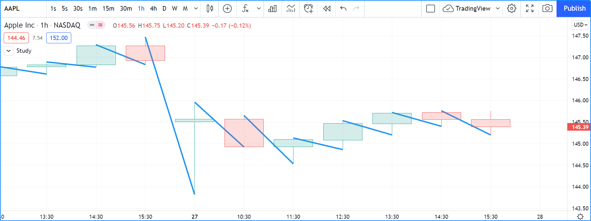//@version=5
indicator("", "", true)
line.new(bar_index - 1, high[1], bar_index, low, width = 3)
Note that:
- We use a different
x1andx2value:bar_index - 1andbar_index. This is necessary, otherwise no line would be created. - We make the width of our line 3 pixels using
width = 3. - No logic controls our line.new() call, so lines are created on every bar.
- Only approximately the last 50 lines are shown because that is the default value for
the
max_lines_countparameter in indicator(), which we haven’t specified. - Lines persist on bars until your script deletes them using line.delete(), or garbage collection removes them.
In this next example, we use lines to create probable travel paths for price. We draw a user-selected quantity of lines from the previous bar’s center point between its close and open values. The lines project one bar after the current bar, after having been distributed along the close and open range of the current bar:
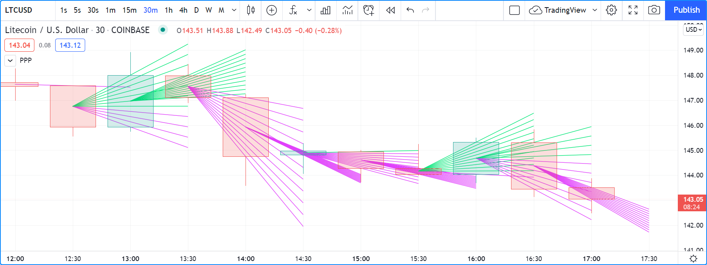//@version=5
indicator("Price path projection", "PPP", true, max_lines_count = 100)
qtyOfLinesInput = input.int(10, minval = 1)
y2Increment = (close - open) / qtyOfLinesInput
// Starting point of the fan in y.
lineY1 = math.avg(close[1], open[1])
// Loop creating the fan of lines on each bar.
for i = 0 to qtyOfLinesInput
// End point in y if line stopped at current bar.
lineY2 = open + (y2Increment * i)
// Extrapolate necessary y position to the next bar because we extend lines one bar in the future.
lineY2 := lineY2 + (lineY2 - lineY1)
lineColor = lineY2 > lineY1 ? color.lime : color.fuchsia
line.new(bar_index - 1, lineY1, bar_index + 1, lineY2, color = lineColor)
Note that:
- We are creating a set of lines from within a for structure.
- We use the default
xloc = xloc.bar_index, so ourx1andx2values are bar indices. - We want to start lines on the previous bar, so we use
bar_index - 1forx1andbar_index + 1forx2. - We use a “series color” value (its value can change in any of the loop’s iterations) for the line’s color. When the line is going up we make it lime; if not we make it fuchsia.
- The script will repaint in realtime because it is using the close and open values of the realtime bar to calculate line projections. Once the realtime bar closes, the lines drawn on elapsed realtime bars will no longer update.
- We use
max_lines_count = 100in our indicator() call to preserve the last 100 lines.
Modifying lines¶
The setter functions allowing you to change a line’s properties are:
- line.set_x1()
- line.set_y1()
- line.set_xy1()
- line.set_x2()
- line.set_y2()
- line.set_xy2()
- line.set_xloc()
- line.set_extend()
- line.set_color()
- line.set_style()
- line.set_width()
They all have a similar signature. The one for line.set_color() is:
line.set_color(id, color) → void
where:
idis the ID of the line whose property is to be modified.- The next parameter is the property of the line to modify. It depends on the setter function used. line.set_xy1() and line.set_xy2() change two properties, so they have two such parameters.
In the next example we display a line showing the highest high
value in the last lookbackInput bars. We will be using setter functions to modify an existing line:
//@version=5
MAX_BARS_BACK = 500
indicator("Last high", "", true, max_bars_back = MAX_BARS_BACK)
repaintInput = input.bool(false, "Position bars in the past")
lookbackInput = input.int(50, minval = 1, maxval = MAX_BARS_BACK)
// Keep track of highest `high` and detect when it changes.
hi = ta.highest(lookbackInput)
newHi = ta.change(hi)
// Find the offset to the highest `high` in last 50 bars. Change it's sign so it is positive.
highestBarOffset = - ta.highestbars(lookbackInput)
// Create label on bar zero only.
var lbl = label.new(na, na, "", color = color(na), style = label.style_label_left)
var lin = line.new(na, na, na, na, xloc = xloc.bar_time, style = line.style_arrow_right)
// When a new high is found, move the label there and update its text and tooltip.
if newHi
// Build line.
lineX1 = time[highestBarOffset + 1]
// Get the `high` value at that offset. Note that `highest(50)` would be equivalent,
// but it would require evaluation on every bar, prior to entry into this `if` structure.
lineY = high[highestBarOffset]
// Determine line's starting point with user setting to plot in past or not.
line.set_xy1(lin, repaintInput ? lineX1 : time[1], lineY)
line.set_xy2(lin, repaintInput ? lineX1 : time, lineY)
// Reposition label and display new high's value.
label.set_xy(lbl, bar_index, lineY)
label.set_text(lbl, str.tostring(lineY, format.mintick))
else
// Update line's right end point and label to current bar's.
line.set_x2(lin, time)
label.set_x(lbl, bar_index)
// Show a blue dot when a new high is found.
plotchar(newHi, "newHighFound", "•", location.top, size = size.tiny)
Note that:
- We plot the line starting on the bar preceding the point where the new high is found. We draw the line from the preceding bar so that we see a one bar line when a new high is found.
- We only start the line in the past, from the actual highest point, when the user explicitly chooses to do so through the script’s inputs. This gives the user control over the repainting behavior of the script. It also avoids misleading traders into thinking that our script is prescient and can know in advance if a high point will still be the high point in the lookback period n bars later.
- We manage the historical buffer to avoid runtime errors when referring to bars too far away in the past.
We do two things for this: we use the
max_bars_backparameter in our indicator() call, and we cap the input forlookbackInputusingmaxvalin our input.int() call. Rather than use the500literal in two places, we create aMAX_BARS_BACKconstant for it. - We create our line and label on the first bar only, using var. From that point on, we only need to update their properties, so we are moving the same line and label along, resetting their position and the label’s text when a new high is found, and then only updating their x coordinates as new bars come in. We use the line.set_xy1() and line.set_xy1() functions when we find a new high, and line.set_x2() on other bars, to extend the line.
- We use time values for
x1andx2because our line.new() call specifiesxloc = xloc.bar_time. - We use
style = line.style_arrow_rightin our line.new() call to display a right arrow line style. - Even though our label’s background is not visible, we use
style = label.style_label_leftin our label.new() call so that the price value is positioned to the right of the chart’s last bar. - To better visualize on which bars a new high is found, we plot a blue dot using plotchar(). Note that this does not necessarily entail the bar where it appears is the new highest value. While this may happen, a new highest value can also be calculated because a long-standing high has dropped off from the lookback length and been replaced by another high that may not be on the bar where the blue dot appears.
- Our chart cursor points to the bar with the highest value in the last 50 bars.
- When the user does not choose to plot in the past, our script does not repaint.
Line styles¶
Various styles can be applied to lines with either the line.new() or line.set_style() functions:
| Argument | Line | Argument | Line | |
|---|---|---|---|---|
line.style_solid |
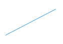 | line.style_arrow_left |
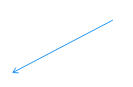 | |
line.style_dotted |
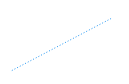 | line.style_arrow_right |
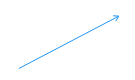 | |
line.style_dashed |
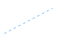 | line.style_arrow_both |
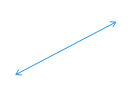 |
Getting line properties¶
The following getter functions are available for lines:
The signature for line.get_price() is:
line.get_price(id, x) → series float
where:
idis the line whosex1value is to be retrievedxis the bar index of the point on the line whose y coordinate is to be returned.
The last four functions all have a similar signature. The one for line.get_x1() is:
line.get_x1(id) → series int
where id is the ID of the line whose x1 value is to be retrieved.
Cloning lines¶
The line.copy() function is used to clone lines. Its syntax is:
line.copy(id) → void
Deleting lines¶
The line.delete() function is used to delete lines. Its syntax is:
line.delete(id) → void
To keep only a user-defined quantity of lines on the chart, one could use code like this, where we are dawing a level every time RSI rises/falls for a user-defined quantity of consecutive bars:
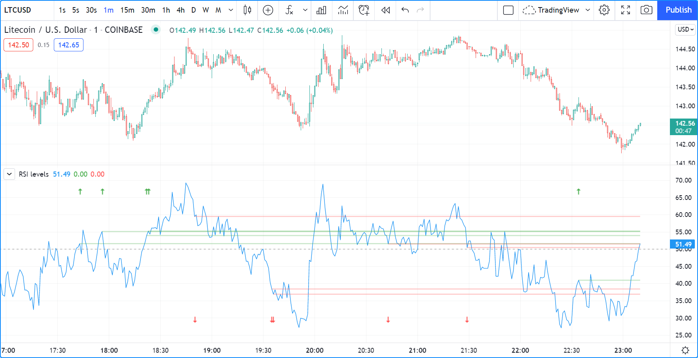//@version=5
int MAX_LINES_COUNT = 500
indicator("RSI levels", max_lines_count = MAX_LINES_COUNT)
int linesToKeepInput = input.int(10, minval = 1, maxval = MAX_LINES_COUNT)
int sensitivityInput = input.int(5, minval = 1)
float myRSI = ta.rsi(close, 20)
bool myRSIRises = ta.rising(myRSI, sensitivityInput)
bool myRSIFalls = ta.falling(myRSI, sensitivityInput)
if myRSIRises or myRSIFalls
color lineColor = myRSIRises ? color.new(color.green, 70) : color.new(color.red, 70)
line.new(bar_index, myRSI, bar_index + 1, myRSI, color = lineColor, width = 2)
// Once the new line is created, delete the oldest one if we have too many.
if array.size(line.all) > linesToKeepInput
line.delete(array.get(line.all, 0))
int(na)
else
// Extend all visible lines.
int lineNo = 0
while lineNo < array.size(line.all)
line.set_x2(array.get(line.all, lineNo), bar_index)
lineNo += 1
int(na)
plot(myRSI)
hline(50)
// Plot markers to show where our triggering conditions are `true`.
plotchar(myRSIRises, "myRSIRises", "ü†Ö", location.top, color.green, size = size.tiny)
plotchar(myRSIFalls, "myRSIFalls", "ü†á", location.bottom, color.red, size = size.tiny)
Note that:
- We define a
MAX_LINES_COUNTconstant to hold the maximum quantity of lines a script can accommodate. We use that value to set themax_lines_countparameter’s value in our indicator() call, and also as themaxvalvalue in our input.int() call, to cap the user value. - We use the
myRSIRisesandmyRSIFallsvariables to hold the states determining when we create a new level. After that, we delete the oldest line in the line.all built-in array that is automatically maintained by the Pine Script® runtime and contains the ID of all the visible lines drawn by our script. We use the array.get() function to retrieve the array element at index zero (the oldest visible line ID). We then use line.delete() to delete the line referenced by that ID. - Again, we need to artificially return
int(na)in both local blocks of our if structure so the compiler doesn’t not complain. See the Matching local block type requiremement section for more information. - This time, we mention the type of variables explicitly when we declare them, as in
float myRSI = ta.rsi(close, 20). The declarations are functionally redundant, but they can help make your intention clear to readers of your code — you being the one who will read it the most frequently.
Boxes¶
Boxes are managed using built-in functions in the box namespace. They include:
- box.new() to create them.
box.set_*()functions to modify the properties of a box.box.get_*()functions to read some of the properties of an existing box.- box.copy() to clone them.
- box.delete() to delete them.
- The box.all
array which always contains the IDs of all the visible boxes on the chart.
The array’s size will depend on the maximum box count for your script and how many of those you have drawn.
aray.size(box.all)will return the array’s size.
Creating boxes¶
The box.new() function creates a new line. It has the following signature:
box.new(left, top, right, bottom, border_color, border_width, border_style, extend, xloc, bgcolor) → series box
Boxes are positioned on the chart according to x (bars) and y (price) coordinates.
Five parameters affect this behavior: left, top, right, bottom and xloc:
leftandright- They are the x coordinates of the line’s start and end points.
They are either a bar index or a time value, as determined by the argument used for
xloc. When a bar index is used, the value can be offset in the past (maximum of 5000 bars) or in the future (maximum of 500 bars). Past or future offsets can also be calculated when using time values. Theleftandrightvalues of an existing line can be modified using box.set_left(), box.set_right(), box.set_lefttop() or box.set_rightbottom(). xloc- Is either xloc.bar_index (the default)
or xloc.bar_time.
It determines which type of argument must be used with
leftandright. With xloc.bar_index,leftandrightmust be absolute bar indices. With xloc.bar_time,leftandrightmust be a UNIX timestamp in milliseconds corresponding to a value between the bar’s time (opening time) and time_close (closing time) values. topandbottom- They are the y coordinates of the boxes’ top and bottom levels (boxes are always rectangular).
While they are called price levels, they must be of values that make sense in the script’s visual space.
For an RSI indicator, they would typically be between 0 and 100, for example.
When an indicator is running as an overlay, then the price scale will usually be that of the chart’s symbol.
The
topandbottomvalues of an existing line can be modified using box.set_top(), box.set_bottom(), box.set_lefttop() or box.set_rightbottom().
The remaining five parameters in box.new() control the visual appearance of boxes:
border_color- Is the border’s color. It defaults to color.blue.
border_width- Determines the width of the border in pixels.
border_style- Is the style of border. See this page’s Box styles section.
extend- Determines if the borders is extended past the box’s coordinates. It can be extend.none, extend.left, extend.right or extend.both.
bgcolor- Is the background color of the box. It defaults to color.blue.
Let’s create simple boxes:
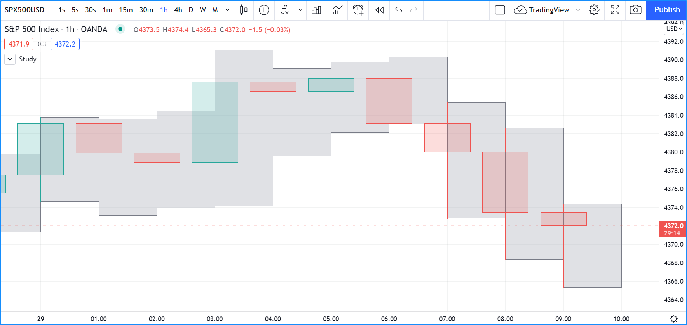//@version=5
indicator("", "", true)
box.new(bar_index, high, bar_index + 1, low, border_color = color.gray, bgcolor = color.new(color.silver, 60))
Note that:
- The start and end points of boxes, like lines, are always the horizontal center of bars.
- We start these boxes at
bar_indexand end them onbar_index + 1(the following bar in the future) so that we get an actual box. If we usedbar_indexfor both coordinates, only a vertical line would be drawn in the center of the bar. - No logic controls our box.new() call, so boxes are created on every bar.
- Only approximately the last 50 boxes are shown because that is the default value for
the
max_boxes_countparameter in indicator(), which we haven’t specified. - Boxes persist on bars until your script deletes them using box.delete(), or garbage collection removes them.
Modifying boxes¶
The available setter functions for box drawings are:
- box.set_left()
- box.set_top()
- box.set_lefttop()
- box.set_right()
- box.set_bottom()
- box.set_rightbottom()
- box.set_border_color()
- box.set_border_width()
- box.set_border_style()
- box.set_extend()
- box.set_bgcolor()
Note that contrary to lines, there is no setter function to modify xloc for boxes.
This script uses setter functions to update boxes. It detects the largest up and down volume bars during a user-defined timeframe and draws boxes with the high and low levels of those bars. If a higher volume bar comes in, the timeframe’s box is redrawn using the new bar’s high and low levels:
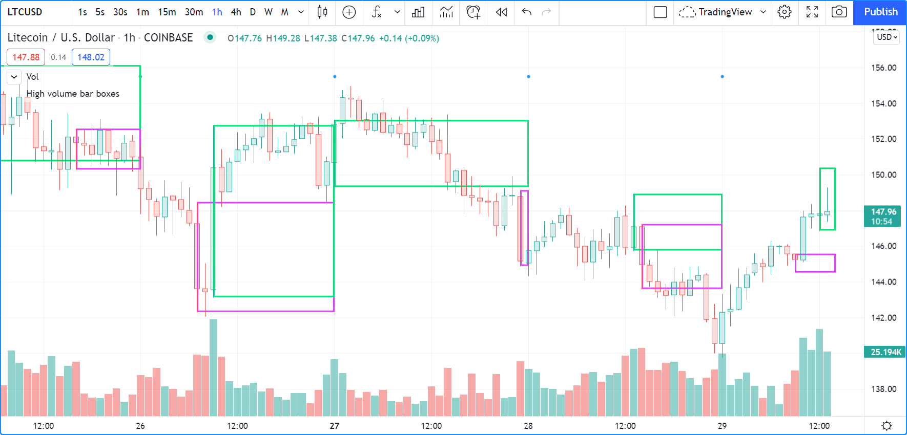//@version=5
indicator("High volume bar boxes", "", true)
string tfInput = input.timeframe("D", "Resetting timeframe")
int transpInput = 100 - input.int(100, "Line Brightness", minval = 0, maxval = 100, step = 5, inline = "1", tooltip = "100 is brightest")
int widthInput = input.int(2, "Width", minval = 0, maxval = 100, step = 5, inline = "1")
color upColorInput = input.color(color.lime, "ü†Ö", inline = "1")
color dnColorInput = input.color(color.fuchsia, "ü†á", inline = "1")
bool newTF = ta.change(time(tfInput))
bool barUp = close > open
// These keep track of highest up/dn volume found during the TF.
var float hiVolUp = na
var float hiVolDn = na
// These always hold the IDs of the current TFs boxes.
var box boxUp = na
var box boxDn = na
if newTF and not na(volume)
// New TF begins; create new boxes, one of which will be invisible.
if barUp
hiVolUp := volume
hiVolDn := na
boxUp := box.new(bar_index, high, bar_index + 1, low, border_color = color.new(upColorInput, transpInput), border_width = widthInput, bgcolor = na)
boxDn := box.new(na, na, na, na, border_color = color.new(dnColorInput, transpInput), border_width = widthInput, bgcolor = na)
else
hiVolDn := volume
hiVolUp := na
boxDn := box.new(bar_index, high, bar_index + 1, low, border_color = color.new(dnColorInput, transpInput), border_width = widthInput, bgcolor = na)
boxUp := box.new(na, na, na, na, border_color = color.new(upColorInput, transpInput), border_width = widthInput, bgcolor = na)
int(na)
else
// On bars during the HTF, keep tracks of highest up/dn volume bar.
if barUp
hiVolUp := math.max(nz(hiVolUp), volume)
else
hiVolDn := math.max(nz(hiVolDn), volume)
// If a new bar has higher volume, reset its box.
if hiVolUp > nz(hiVolUp[1])
box.set_lefttop(boxUp, bar_index, high)
box.set_rightbottom(boxUp, bar_index + 1, low)
else if hiVolDn > nz(hiVolDn[1])
box.set_lefttop(boxDn, bar_index, high)
box.set_rightbottom(boxDn, bar_index + 1, low)
int(na)
// On all bars, extend right side of both boxes.
box.set_right(boxUp, bar_index + 1)
box.set_right(boxDn, bar_index + 1)
// Plot circle mark on TF changes.
plotchar(newTF, "newTF", "•", location.top, size = size.tiny)
Note that:
- We use the
inlineparameter in the inputs relating to the boxes’ visual appearance to place them on the same line. - We subtract the 0-100 brightness level given by the user from 100 to generate the correct transparency for our box borders. We do this because it is more intuitive for users to specify a brightness level where 100 represents maximum brightness. We provide a tooltip to explain the scale.
- When a new higher timeframe bar comes in and the symbol’s feed contains volume data, we reset our information. If the timeframe’s first bar is up,
we create a new visible
boxUpbox and an invisibleboxDnbox. We do the inverse if the first bar’s polarity is down. We take care to reassign the IDs of the newly created boxes toboxUpandboxUpso we will be able to update those boxes later in the script. This is possible because we have declared those variables with var. See the section on the var declaration mode for more information. - On all other chart bars belonging to the same higher timeframe bar, we monitor volume values to keep track of the highest. If a new higher volume bar is encountered, we reset the corresponding box’s coordinates on that new bar using box.set_lefttop() and box.set_rightbottom().
- On all bars, we extend the right side of the timeframe’s two boxes using box.set_right().
- Approximately the last 50 boxes will be visible on the chart because we do not use
max_boxes_countin our indicator() call to change its default value.
This is our script’s “Settings/Inputs” tab:
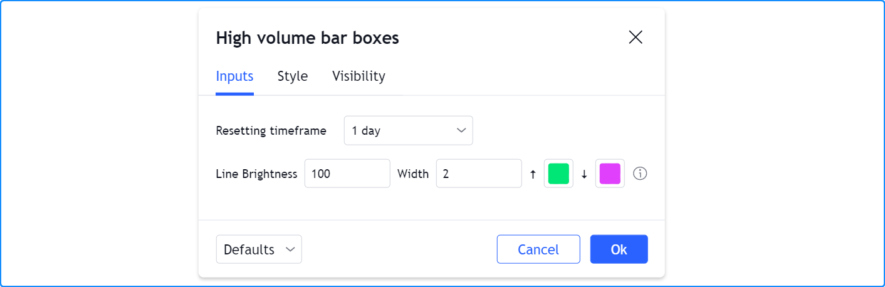Box styles¶
Various styles can be applied to boxes with either the box.new() or box.set_border_style() functions:
| Argument | Box |
|---|---|
line.style_solid |
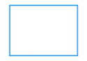 |
line.style_dotted |
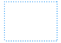 |
line.style_dashed |
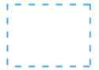 |
Getting box properties¶
The following getter functions are available for boxes:
The signature for box.get_top() is:
box.get_top(id) → series float
where id is the ID of the box whose top value is to be retrieved.
Cloning boxes¶
The box.copy() function is used to clone boxes. Its syntax is:
box.copy(id) → void
Deleting boxes¶
The box.delete() function is used to delete boxes. Its signature is:
box.delete(id) → void
Realtime behavior¶
Lines and boxes are subject to both commit and rollback actions, which affect the behavior of a script when it executes in the realtime bar. See the page on Pine Script®’s Execution model.
This script demonstrates the effect of rollback when running in the realtime bar:
//@version=5
indicator("My Script", overlay = true)
line.new(bar_index, high, bar_index, low, width = 6)
While line.new() creates a new line on every iteration of the script when price changes in the realtime bar, the most recent line created in the script’s previous iteration is also automatically deleted because of the rollback before the next iteration. Only the last line created before the realtime bar’s close will be committed, and will thus persist.
Limitations¶
Total number of objects¶
Lines and boxes consume server resources, which is why there is a limit to the total number of drawings per indicator or strategy. When too many are created, old ones are automatically deleted by the Pine Script® runtime, in a process referred to as garbage collection.
This code creates a line on every bar:
//@version=5
indicator("", "", true)
line.new(bar_index, high, bar_index, low, width = 6)
Scrolling the chart left, one will see there are no lines after approximately 50 bars:
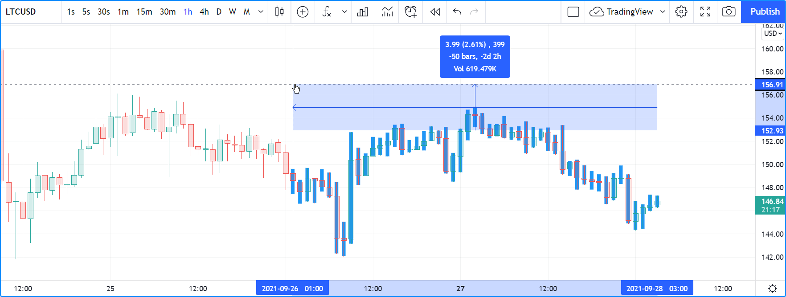You can change the drawing limit to a value in range from 1 to 500 using the max_lines_count and max_boxes_count parameters
in the indicator()
or strategy() functions:
//@version=5
indicator("", "", true, max_lines_count = 100)
line.new(bar_index, high, bar_index, low, width = 6)
Future references with `xloc.bar_index`¶
Objects positioned using xloc.bar_index cannot be drawn further than 500 bars into the future.
Additional securities¶
Lines and boxes cannot be managed in functions sent with request.security() calls. While they can use values fetched through request.security(), they must be drawn in the main symbol’s context.
This is also the reason why line and box drawing code will not work in scripts using the timeframe parameter
in indicator().
Historical buffer and `max_bars_back`¶
Use of barstate.isrealtime in combination with drawings may sometimes produce unexpected results.
This code’s intention, for example, is to ignore all historical bars and create a label drawing on the realtime bar:
//@version=5
indicator("My Script", overlay = true)
if barstate.isrealtime
label.new(bar_index[300], na, text = "Label", yloc = yloc.abovebar)
It will, however, fail at runtime. The reason for the error is that the script cannot determine the buffer size
for historical values of the time plot, even though the time built-in variable isn’t mentioned in the code.
This is due to the fact that the built-in variable bar_index uses the time series in its inner workings.
Accessing the value of the bar index 300 bars back requires that the history buffer size of the time series
be of size 300 or more.
In Pine Script®, there is a mechanism that automaticaly detects the required historical buffer size for most cases.
Autodetection works by letting a script access historical values any number of bars back for a limited duration.
In this script’s case, the if barstate.isrealtime condition prevents any such accesses to occur,
so the required historical buffer size cannot be inferred and the code fails.
The solution to this conundrum is to use the max_bars_back function to explicitly set the historical buffer size for the time series:
//@version=5
indicator("My Script", overlay = true)
max_bars_back(time, 300)
if barstate.isrealtime
label.new(bar_index[300], na, text = "Label", yloc = yloc.abovebar)
Such occurrences are confusing, but rare. In time, the Pine Script® team hopes to eliminate them.
Examples¶
Pivot Points Standard¶

//@version=5
indicator("Pivot Points Standard", overlay = true)
higherTFInput = input.timeframe("D")
prevCloseHTF = request.security(syminfo.tickerid, higherTFInput, close[1], lookahead = barmerge.lookahead_on)
prevOpenHTF = request.security(syminfo.tickerid, higherTFInput, open[1], lookahead = barmerge.lookahead_on)
prevHighHTF = request.security(syminfo.tickerid, higherTFInput, high[1], lookahead = barmerge.lookahead_on)
prevLowHTF = request.security(syminfo.tickerid, higherTFInput, low[1], lookahead = barmerge.lookahead_on)
pLevel = (prevHighHTF + prevLowHTF + prevCloseHTF) / 3
r1Level = pLevel * 2 - prevLowHTF
s1Level = pLevel * 2 - prevHighHTF
var line r1Line = na
var line pLine = na
var line s1Line = na
if pLevel[1] != pLevel
line.set_x2(r1Line, bar_index)
line.set_x2(pLine, bar_index)
line.set_x2(s1Line, bar_index)
line.set_extend(r1Line, extend.none)
line.set_extend(pLine, extend.none)
line.set_extend(s1Line, extend.none)
r1Line := line.new(bar_index, r1Level, bar_index, r1Level, extend = extend.right)
pLine := line.new(bar_index, pLevel, bar_index, pLevel, width=3, extend = extend.right)
s1Line := line.new(bar_index, s1Level, bar_index, s1Level, extend = extend.right)
label.new(bar_index, r1Level, "R1", style = label.style_none)
label.new(bar_index, pLevel, "P", style = label.style_none)
label.new(bar_index, s1Level, "S1", style = label.style_none)
if not na(pLine) and line.get_x2(pLine) != bar_index
line.set_x2(r1Line, bar_index)
line.set_x2(pLine, bar_index)
line.set_x2(s1Line, bar_index)
Pivot Points High/Low¶
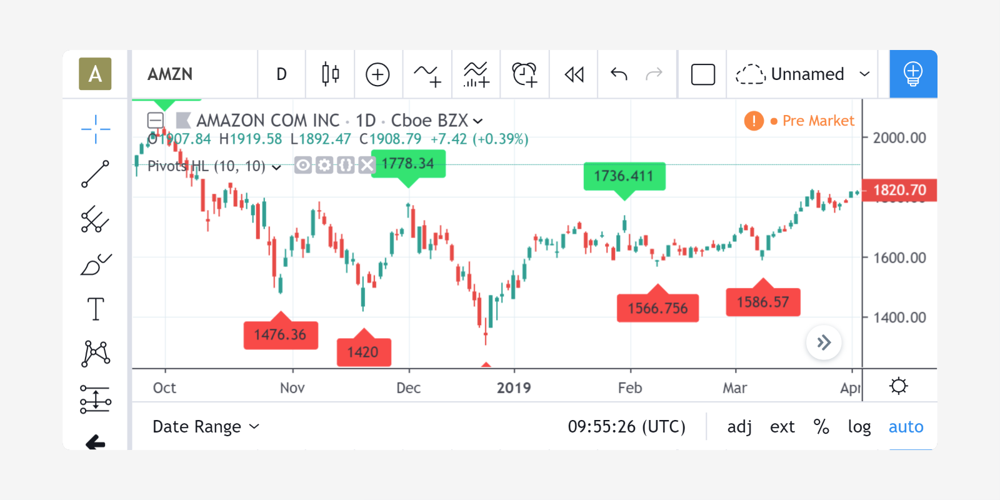//@version=5
indicator("Pivot Points High Low", "Pivots HL", true)
int lenHInput = input.int(10, "Length High", minval = 1)
int lenLInput = input.int(10, "Length Low", minval = 1)
float pivotHigh = ta.pivothigh(high, lenHInput, lenHInput)
float pivotLow = ta.pivotlow(low, lenLInput, lenLInput)
float pivot = 0.0
if not na(pivotHigh)
pivot := nz(high[lenHInput])
label.new(nz(bar_index[lenHInput]), pivot, str.tostring(pivot, format.mintick), style = label.style_label_down, yloc = yloc.abovebar, color = color.lime)
if not na(pivotLow)
pivot := nz(low[lenLInput])
label.new(nz(bar_index[lenLInput]), pivot, str.tostring(pivot, format.mintick), style = label.style_label_up, yloc = yloc.belowbar, color = color.red)
Linear Regression¶
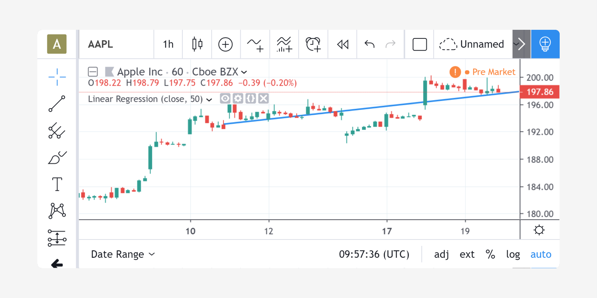//@version=5
indicator('Linear Regression', shorttitle='LinReg', overlay=true)
upperMult = input(title='Upper Deviation', defval=2)
lowerMult = input(title='Lower Deviation', defval=-2)
useUpperDev = input(title='Use Upper Deviation', defval=true)
useLowerDev = input(title='Use Lower Deviation', defval=true)
showPearson = input(title='Show Pearson\'s R', defval=true)
extendLines = input(title='Extend Lines', defval=false)
len = input(title='Count', defval=100)
src = input(title='Source', defval=close)
extend = extendLines ? extend.right : extend.none
calcSlope(src, len) =>
if not barstate.islast or len <= 1
[float(na), float(na), float(na)]
else
sumX = 0.0
sumY = 0.0
sumXSqr = 0.0
sumXY = 0.0
for i = 0 to len - 1 by 1
val = src[i]
per = i + 1.0
sumX := sumX + per
sumY := sumY + val
sumXSqr := sumXSqr + per * per
sumXY := sumXY + val * per
sumXY
slope = (len * sumXY - sumX * sumY) / (len * sumXSqr - sumX * sumX)
average = sumY / len
intercept = average - slope * sumX / len + slope
[slope, average, intercept]
[s, a, intercpt] = calcSlope(src, len)
startPrice = intercpt + s * (len - 1)
endPrice = intercpt
var line baseLine = na
if na(baseLine) and not na(startPrice)
baseLine := line.new(bar_index - len + 1, startPrice, bar_index, endPrice, width = 1, extend=extend, color = color.red)
baseLine
else
line.set_xy1(baseLine, bar_index - len + 1, startPrice)
line.set_xy2(baseLine, bar_index, endPrice)
na
calcDev(src, len, slope, average, intercept) =>
upDev = 0.0
dnDev = 0.0
stdDevAcc = 0.0
dsxx = 0.0
dsyy = 0.0
dsxy = 0.0
periods = len - 1
daY = intercept + slope * periods / 2
val = intercept
for i = 0 to periods by 1
price = high[i] - val
if price > upDev
upDev := price
upDev
price := val - low[i]
if price > dnDev
dnDev := price
dnDev
price := src[i]
dxt = price - average
dyt = val - daY
price := price - val
stdDevAcc := stdDevAcc + price * price
dsxx := dsxx + dxt * dxt
dsyy := dsyy + dyt * dyt
dsxy := dsxy + dxt * dyt
val := val + slope
val
stdDev = math.sqrt(stdDevAcc / (periods == 0 ? 1 : periods))
pearsonR = dsxx == 0 or dsyy == 0 ? 0 : dsxy / math.sqrt(dsxx * dsyy)
[stdDev, pearsonR, upDev, dnDev]
[stdDev, pearsonR, upDev, dnDev] = calcDev(src, len, s, a, intercpt)
upperStartPrice = startPrice + (useUpperDev ? upperMult * stdDev : upDev)
upperEndPrice = endPrice + (useUpperDev ? upperMult * stdDev : upDev)
var line upper = na
lowerStartPrice = startPrice + (useLowerDev ? lowerMult * stdDev : -dnDev)
lowerEndPrice = endPrice + (useLowerDev ? lowerMult * stdDev : -dnDev)
var line lower = na
if na(upper) and not na(upperStartPrice)
upper := line.new(bar_index - len + 1, upperStartPrice, bar_index, upperEndPrice, width=1, extend=extend, color=#0000ff)
upper
else
line.set_xy1(upper, bar_index - len + 1, upperStartPrice)
line.set_xy2(upper, bar_index, upperEndPrice)
na
if na(lower) and not na(lowerStartPrice)
lower := line.new(bar_index - len + 1, lowerStartPrice, bar_index, lowerEndPrice, width=1, extend=extend, color=#0000ff)
lower
else
line.set_xy1(lower, bar_index - len + 1, lowerStartPrice)
line.set_xy2(lower, bar_index, lowerEndPrice)
na
// Pearson's R
var label r = na
transparent = color.new(color.white, 100)
label.delete(r[1])
if showPearson and not na(pearsonR)
r := label.new(bar_index - len + 1, lowerStartPrice, str.tostring(pearsonR, '#.################'), color=transparent, textcolor=#0000ff, size=size.normal, style=label.style_label_up)
r
Zig Zag¶
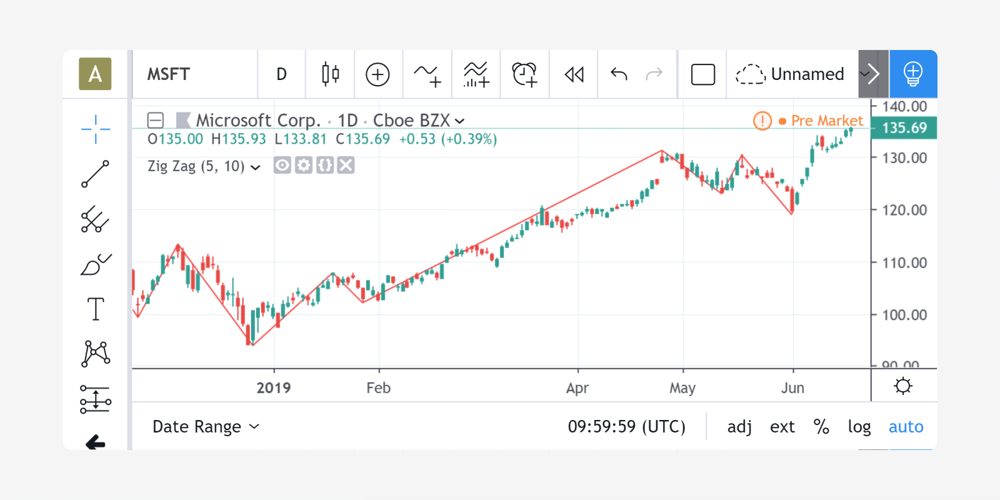//@version=5
indicator('Zig Zag', overlay = true)
float dev_threshold = input.float(title = 'Deviation (%)', defval = 5, minval = 1, maxval = 100)
int depth = input.int(title = 'Depth', defval = 10, minval = 1)
type Point
int index
float price
type Pivot
line ln
bool isHigh
Point point
var pivotArray = array.new<Pivot>()
int length = math.floor(depth / 2)
float pH = ta.pivothigh(high, length, length)
float pL = ta.pivotlow(low, length, length)
calcDeviation(base_price, price) =>
100 * math.abs(price - base_price) / base_price
newPivot(Point lastPoint, bool isHigh, int index, float price) =>
line ln = line.new(lastPoint.index, lastPoint.price, index, price, color = color.red, width = 2)
Pivot pivot = Pivot.new(ln, isHigh, Point.new(index, price))
array.push(pivotArray, pivot)
pivot
updatePivot(Pivot pivot, int index, float price) =>
line ln = pivot.ln
line.set_xy2(ln, index, price)
pivot.point.index := index
pivot.point.price := price
pivot
isPivotFound(bool isHigh, float price) =>
bool result = false
int index = bar_index[length]
int size = array.size(pivotArray)
Pivot prevPivot = size >= 1 ? array.get(pivotArray, size - 1) : newPivot(Point.new(index, price), isHigh, index, price)
if prevPivot.isHigh and not na(prevPivot.ln)
m = isHigh ? 1 : -1
if price * m > prevPivot.point.price * m
updatePivot(prevPivot, index, price)
result := true
else if na(prevPivot.ln) or math.abs(calcDeviation(prevPivot.point.price, price)) >= dev_threshold
newPivot(prevPivot.point, isHigh, index, price)
result := true
result
isPivotFound(true, pH)
isPivotFound(false, pL)